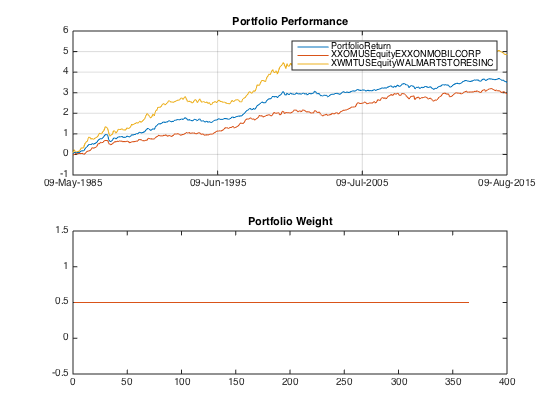

Day 2, Let's focus on this simple Momentum Factor Portfolio
In this post I want to try an alternative way to reconstruct MOM factor, which provides us more tansparancy, and generates an trade list that we can act upon. I will also exam the effect of periodical rebalancing. and compare the result with buy and hold portfolio.
Contents
Review
In the first attempt on MOM, we have achieved the following:
- Construct the momentum signal
- Construct portfolio weight
- Calculate the portfolio performance using weight*return
This is the pattern of development we will use as we expand gradually to other factors. simple->iterate->finish
Preparation
Let's roll....@@@ load.
load('data_equity_list.mat'); load('data_field_list.mat'); load('data_historical_data.mat'); % update the equity list i = 1; for i = 1:size(history,1) if not(isempty(history{i,3})) equity_list(i,3) = history{i,3}.CNTRY_OF_DOMICILE; equity_list(i,4) = history{i,3}.NAME; equity_list(i,5) = history{i,3}.SECURITY_TYP; equity_list(i,6) = history{i,3}.MARKET_STATUS; equity_list(i,7) = history{i,3}.INDUSTRY_SECTOR; equity_list(i,8) = history{i,3}.INDUSTRY_GROUP; equity_list(i,9) = history{i,3}.INDUSTRY_SUBGROUP; else disp(sprintf('equity list <<%d>> is empty', i)); end end % extract securities of interest i=1; while i<=2 security{i} = fints(history{i,1}(:,1),history{i,1}(:,2),regexprep(strcat('X',equity_list(i,1),equity_list(i,4)),'[^a-zA-Z0-9_]',''),'m','LAST_PRICE'); i = i+1; end px = merge(security{:}, 'SortColumns', 0); % generate the signal px_mat = fts2mat(px); mom = nan(size(px_mat,1),size(px_mat,2)); i = 1; while i <= size(px_mat,1) if i==1 || i ==2 mom(i,:) = nan(1,size(px_mat,2)); else mom(i,:) = (px_mat(i-1,:)-px_mat(max(1,i-12),:))./px_mat(max(1,i-12),:); end i = i+1; end % generate the portfolio weight security_rank = tiedrank(mom')'; rank_max = max(security_rank,[],2); score = bsxfun (@rdivide, bsxfun(@minus,security_rank,(rank_max+1)/2), ((rank_max-1)/2)); portfolio_weight = score; portfolio_weight_name = fieldnames(px); portfolio_weight_ts = fints(px.dates,portfolio_weight,portfolio_weight_name(4:end),'m','PortfolioWeight'); % calculate the portfolio returns rt = tick2ret(px); rt_mat = fts2mat(rt); portfolio_rt_arithmetic = nansum((rt_mat.*portfolio_weight(1:end-1,:))')'; portfolio_rt_geometric = log(1+portfolio_rt_arithmetic); portfolio_rt_ts = fints(rt.dates,portfolio_rt_geometric,'PortfolioReturn'); portfolio_rt_ts = fillts(portfolio_rt_ts,0); rt = fillts(rt,0); % rush to finish! all_rt_ts = merge(portfolio_rt_ts,rt,'SortColumns', 0); figure subplot(2,1,1) plot(cumsum(all_rt_ts)); title('Portfolio Performance') subplot(2,1,2) plot(portfolio_weight); title('Portfolio Weight')
equity list <<529>> is empty
this is all fast forwarding from the previous post.
Alternative way to backtest
reconstructing the full portfolio history through one single line weight*return is neat. Alternatively, I can reconstruct the portfolio sequentially step-by-step.
initial_capital = 100; history_dates = px.dates; % what I will do is: at end of each month. I take a look at my capital, % and rebalance the portfolio according to the portfolio weight at that time. i=1; current_capital = initial_capital; portfolio_capital(1) = initial_capital; while i <= size(history_dates,1)-1 % on this day datestr(history_dates(i)); current_date = datestr(history_dates(i)); current_px = fts2mat(px(current_date)); current_pw = fts2mat(portfolio_weight_ts(current_date)); % this is the position I take current_position = current_capital*current_pw./current_px; % time goes on till the next month end. % what's my pnl? next_date = datestr(history_dates(i+1)); next_px = fts2mat(px(next_date)); pnl = sum(current_position.*(next_px-current_px)); if isnan(pnl) pnl = 0; end current_capital = current_capital + pnl; % turn the page i = i+1; % keep a record portfolio_capital(i) = current_capital; end portfolio_capital_ts = fints(px.dates,portfolio_capital','PortfolioCapitalWalkforward');
compare this result to the portfolio performance obtained by weight*return
figure plot(portfolio_capital_ts); snapnow; hold on; plot(100*exp(cumsum(portfolio_rt_ts))); snapnow; hold on;


compare to the equity return, it seems quite pointless to go longshort.
plot(100*exp(cumsum(rt))); snapnow;
Gist of walkforward function.
it's important to keep things simple and limit your options when you do iterations. Otherwise, your code might develop into some little monster like the gist below, This is what happens when you try to accomodate too many things at one shot:
Rebalancing, no rebalancing?
Let'sconstruct an equal weight portfolio.
porfolio_weight_equal = 0.5*ones(size(portfolio_weight));
Be mindful that this way to generate weight portfolio is not realiable when apply to larger dataset with a lot NANs. I will deal with that problem later.
portfolio_rt_arithmetic = nansum((rt_mat.*porfolio_weight_equal(1:end-1,:))')'; portfolio_rt_geometric = log(1+portfolio_rt_arithmetic); portfolio_rt_ts = fints(rt.dates,portfolio_rt_geometric,'PortfolioReturn'); portfolio_rt_ts = fillts(portfolio_rt_ts,0); rt = fillts(rt,0); all_rt_ts = merge(portfolio_rt_ts,rt,'SortColumns', 0); figure subplot(2,1,1) plot(cumsum(all_rt_ts)); title('Portfolio Performance') subplot(2,1,2) plot(porfolio_weight_equal); title('Portfolio Weight')
with only two security, we already start to see some sharpe improvement.
sharpe(fts2mat(all_rt_ts),0)
ans =
0.2132 0.1689 0.1890